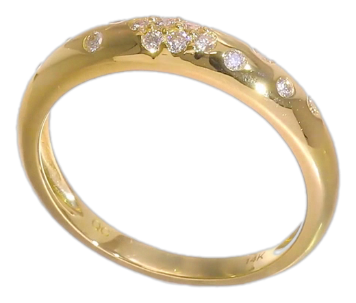
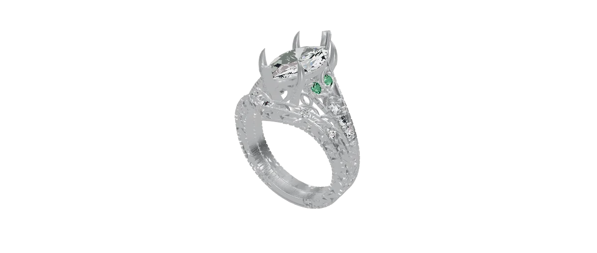
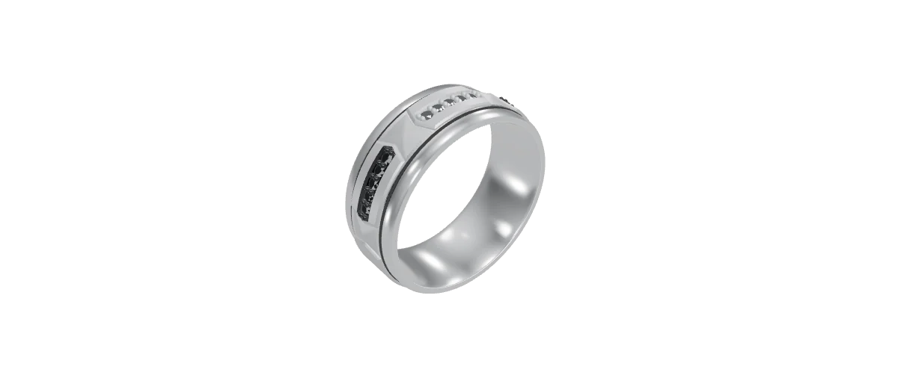

Mark ElwoodCertified TIG welder, now directing AI systems across production codebases and generative pipelines: software and CAD built through Claude Code, imagery generated through Gemini. The systems below are a sample, all running daily in production.
Judgment at the start and at the finish. Generation in the middle.
Every system on this page was built through the same six-stage sequence. The model handles generation, quickly and at volume. The stages around it decide what gets built, and what is allowed to ship.
Scope and direction come first, so the model works against a written specification, edge cases included, rather than an open-ended prompt. Review and stress testing follow: every line is read, and the system is driven through the failure modes it will meet in production. Only what passes verification on real devices is deployed, and it runs under monitoring, so any failure surfaces the moment it happens.
Auto-advancing. Swipe up or down, click a step, or a tab, to jump around.
Select any system below to see how it works.
The catalog sync, rendered simply.

Not mockups. Every link below is live, and the two rings underneath are the actual models from custom orders, fully constructed in CAD by Claude and running on this page.
The live storefront itself. Every system described above runs here, in production, right now.
A live 3D viewer built for a custom order: a platinum chevron band engineered to nest exactly against a customer's marquise engagement ring.
A live 3D viewer built for a custom order: a pendant directed through Claude from the first prompt through to the final model.

